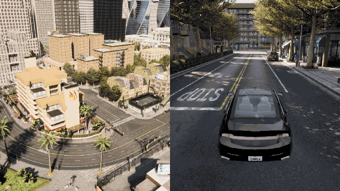

3rd. Maps and navigation
After discussing about the world and its actors, it is time to put everything into place and understand the map and how do the actors navigate it.
The map
A map includes both the 3D model of a town and its road definition. A map's road definition is based on an OpenDRIVE file, a standarized, annotated road definition format. The way the OpenDRIVE standard 1.4 defines roads, lanes, junctions, etc. determines the functionality of the Python API and the reasoning behind decisions made.
The Python API acts as a high level querying system to navigate these roads. It is constantly evolving to provide a wider set of tools.
Changing the map
To change the map, the world has to change too. The simulation will be recreated from scratch. You can either restart with the same map in a new world or you can change both the map and the world:
reload_world()creates a new instance of the world with the same map.load_world()changes the current map and creates a new world.
world = client.load_world('Town01')
Each map has a name attribute that matches the name of the currently loaded city, e.g. Town01. To get a list of the available maps:
print(client.get_available_maps())
Landmarks
Traffic signs defined in the OpenDRIVE file are translated to CARLA as landmark objects that can be queried from the API. The following methods and classes can be used to manipulate and work with landmark objects:
carla.Landmarkobjects represent OpenDRIVE signals. The attributes and methods of this class describe the landmark and its area of influence.carla.LandmarkOrientationstates the orientation of the landmark with regard to the road's geometry definition.carla.LandmarkTypecontains common landmark types to facilitate translation to OpenDRIVE types.
carla.Waypointcan get landmarks located a certain distance ahead of it. The landmark type to get can be specified.carla.Mapretrieves sets of landmarks. It can return all landmarks in the map, or those which have a common ID, type or group.carla.Worldacts as intermediary between landmarks and thecarla.TrafficSignandcarla.TrafficLightthat represent them in the simulation.
my_waypoint.get_landmarks(200.0,True)
Waypoints
A carla.Waypoint is a 3D-directed point in the CARLA world corresponding to an OpenDRIVE lane. Everything related to waypoints happens on the client-side; communication with the server is only needed once to get the map object containing the waypoint information.
Each waypoint contains a carla.Transform which states its location on the map and the orientation of the lane containing it. The variables road_id,section_id,lane_id and s correspond to the OpenDRIVE road. The id of the waypoint is constructed from a hash combination of these four values.
Note
Waypoints closer than 2cm within the same road share the same id.
A waypoint holds information about the lane containing it. This information includes the lane's left and right lane markings, a boolean to determine if it's inside a junction, the lane type, width, and lane changing permissions.
# Access lane information from a waypoint
inside_junction = waypoint.is_junction()
width = waypoint.lane_width
right_lm_color = waypoint.right_lane_marking.color
Lanes
The lane types defined by OpenDRIVE standard 1.4 are translated to the API in carla.LaneType as a series of enum values.
The lane markings surrounding a lane are accessed through carla.LaneMarking. Lane markings are defined by a series of variables:
- color:
carla.LaneMarkingColorare enum values that define the marking's color. - lane_change:
carla.LaneChangestates if the lane permits turning left, right, both or none. - type:
carla.LaneMarkingTypeare enum values that define the type of marking according to the OpenDRIVE standard. - width: defines the marking's thickness.
The below example shows to get information about the lane type, lane markings, and lane change permissions at a specific waypoint:
# Get the lane type of the waypoint
lane_type = waypoint.lane_type
# Get the type of lane marking on the left.
left_lanemarking_type = waypoint.left_lane_marking.type()
# Get available lane changes for this waypoint.
lane_change = waypoint.lane_change
Junctions
A carla.Junction represents an OpenDRIVE junction. This class encompasses a junction with a bounding box to identify lanes or vehicles within it.
The carla.Junction class contains the get_waypoints method which returns a pair of waypoints for every lane within the junction. Each pair is located at the start and end points of the junction boundaries.
waypoints_junc = my_junction.get_waypoints()
Environment Objects
Every object on a CARLA map has a set of associated variables which can be found here. Included in these variables is a unique ID that can be used to toggle that object's visibility on the map. You can use the Python API to fetch the IDs of each environment object based on their semantic tag:
# Get the buildings in the world
world = client.get_world()
env_objs = world.get_environment_objects(carla.CityObjectLabel.Buildings)
# Access individual building IDs and save in a set
building_01 = env_objs[0]
building_02 = env_objs[1]
objects_to_toggle = {building_01.id, building_02.id}
# Toggle buildings off
world.enable_environment_objects(objects_to_toggle, False)
# Toggle buildings on
world.enable_environment_objects(objects_to_toggle, True)
See an example of distinct objects being toggled:

Navigation in CARLA
Navigation in CARLA is managed via the Waypoint API, a combination of methods from carla.Waypoint and carla.Map.
The client must initially communicate with the server to retrieve the map object containing the waypoint information. This is only required once, all subsequent queries are performed on the client side.
Navigating through waypoints
The Waypoint API exposes methods that allow waypoints to connect to each other and construct a path along a road for vehicles to navigate:
next(d)creates a list of waypoints within an approximate distance,d, in the direction of the lane. The list contains one waypoint for each possible deviation.previous(d)creates a list of waypoints waypoint within an approximate distance,d, in the opposite direction of the lane. The list contains one waypoint for each possible deviation.next_until_lane_end(d)andprevious_until_lane_start(d)return a list of waypoints a distancedapart. The lists go from the current waypoint to the end and beginning of its lane, respectively.get_right_lane()andget_left_lane()return the equivalent waypoint in an adjacent lane, if one exists. A lane change maneuver can be made by finding the next waypoint to the one on its right/left lane, and moving to it.
# Find next waypoint 2 meters ahead.
waypoint = waypoint.next(2.0)
Generating map navigation
The client needs to make a request to the server to get the .xodr map file and parse it to a carla.Map object. This only needs to be done once.
To get the map object:
map = world.get_map()
The map object contains recommended spawn points for the creation of vehicles. You can get a list of these spawn points, each one containing a carla.Transform, using the method below. Bear in mind that the spawn points may be occupied already, resulting in failed creation of vehicles due to collisions.
spawn_points = world.get_map().get_spawn_points()
You can get started with waypoints by getting the closest waypoint to a specific location or to a particular road_id, lane_id and s value in the map's OpenDRIVE definition:
# Nearest waypoint in the center of a Driving or Sidewalk lane.
waypoint01 = map.get_waypoint(vehicle.get_location(),project_to_road=True, lane_type=(carla.LaneType.Driving | carla.LaneType.Sidewalk))
#Nearest waypoint but specifying OpenDRIVE parameters.
waypoint02 = map.get_waypoint_xodr(road_id,lane_id,s)
The below example shows how to generate a collection of waypoints to visualize the city lanes. This will create waypoints all over the map, for every road and lane. All of them will approximately 2 meters apart:
waypoint_list = map.generate_waypoints(2.0)
To generate a minimal graph of road topology, use the example below. This will return a list of pairs (tuples) of waypoints. The first element in each pair connects with the second element and both define the start and end points of each lane in the map. More information on this method is found in the PythonAPI.
waypoint_tuple_list = map.get_topology()
The example below converts a carla.Transform to geographical latitude and longitude coordinates, in the form of a carla.GeoLocation:
my_geolocation = map.transform_to_geolocation(vehicle.transform)
Use the following example to save road information in OpenDRIVE format to disk:
info_map = map.to_opendrive()
CARLA maps
There are eight towns in the CARLA ecosystem and each of those towns have two kinds of map, non-layered and layered. Layers refer to the grouped objects within a map and consist of the following:
- NONE
- Buildings
- Decals
- Foliage
- Ground
- ParkedVehicles
- Particles
- Props
- StreetLights
- Walls
- All
Non-layered maps
Non-layered maps are shown in the table below (click the town name to see an overhead image of the layout). All of the layers are present at all times and cannot be toggled on or off in these maps. Up until CARLA 0.9.11, these were the only kinds of map available.
Note
Users can customize a map or even create a new map to be used in CARLA.
| Town | Summary |
|---|---|
| Town01 | A basic town layout consisting of "T junctions". |
| Town02 | Similar to Town01, but smaller. |
| Town03 | The most complex town, with a 5-lane junction, a roundabout, unevenness, a tunnel, and more. |
| Town04 | An infinite loop with a highway and a small town. |
| Town05 | Squared-grid town with cross junctions and a bridge. It has multiple lanes per direction. Useful to perform lane changes. |
| Town06 | Long highways with many highway entrances and exits. It also has a Michigan left. |
| Town07 | A rural environment with narrow roads, barns and hardly any traffic lights. |
| Town10 | A city environment with different environments such as an avenue or promenade, and more realistic textures. |
{kind=link}
{kind=link}
{kind=link}
{kind=link}
{kind=link}
{kind=link}
{kind=link}
{kind=link}
Layered maps
The layout of layered maps is the same as non-layered maps but it is possible to toggle off and on the layers of the map. There is a minimum layout that cannot be toggled off and consists of roads, sidewalks, traffic lights and traffic signs. Layered maps can be identified by the suffix _Opt, for example, Town01_Opt. With these maps it is possible to load and unload layers via the Python API:
# Load layered map for Town 01 with minimum layout plus buildings and parked vehicles
world = client.load_world('Town01_Opt', carla.MapLayer.Buildings | carla.MapLayer.ParkedVehicles)
# Toggle all buildings off
world.unload_map_layer(carla.MapLayer.Buildings)
# Toggle all buildings on
world.load_map_layer(carla.MapLayer.Buildings)
See an example of all layers being loaded and unloaded in sequence:

That is a wrap as regarding maps and navigation in CARLA. The next step takes a closer look into sensors types, and the data they retrieve.
Keep reading to learn more or visit the forum to post any doubts or suggestions that have come to mind during this reading.